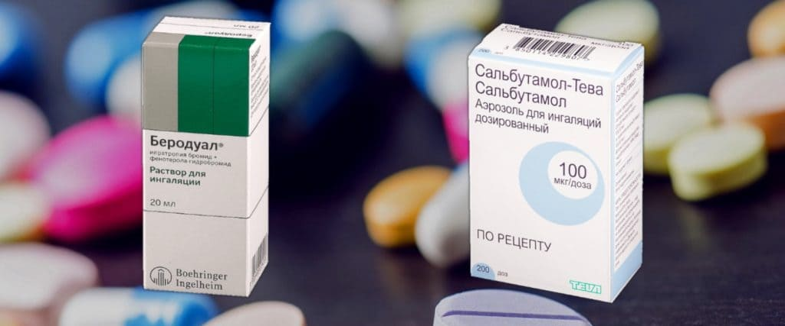

ЧТО ЭТО?
Бронхообструктивный синдром (сокращенно БОС) – это не диагноз, это состояние, которое бывает при многих диагнозах. Суть БОС состоит в сужении (обструкции) мелких бронхов за счет трех механизмов:
1) спазма гладких мышц в стенке бронха;
2) отека (временное утолщение) стенки бронха;
3) секреции вязкой слизи (мокроты) в просвет бронха;
При затяжных заболеваниях, сопровождающихся БОС, добавляется еще четвертый механизм:
4) ремоделирование стенки бронха (стойкое изменение толщины стенки бронха).
Есть ли у этого состояния другие названия?
В англоязычной литературе БОС иногда называют полным эквивалентом: bronchial obstruction syndrome, но гораздо чаще можно встретить термин wheezing (перевод с англ. «свистящее дыхание»). Вьезинг – очень меткое, лаконичное и правильное название этого состояния, потому что главным проявлением БОС являются свистящие хрипы в легких.
ОТКУДА ЭТО БЕРЕТСЯ
Есть немалое количество заболеваний, сопровождающихся БОС (кислотный рефлюкс, муковисцидоз, инородное тело бронхов и т. д.), однако редкие болезни бывают редко, и если мы видим ребенка со свистящими хрипами в легких, это скорее обструктивный бронхит/бронхиальная астма, чем что-либо другое.
ЛЮБОЙ РЕБЕНОК СО СВИСТЯЩИМИ ХРИПАМИ – АСТМАТИК?
Нет, не любой, только меньшая их часть. Если нет оснований думать о более редких причинах вьезинга, то чаще всего их разделяют на два состояния:
1) отдельные, нечастые и нетяжелые эпизоды wheezing, называя их бронхообструкцией, или обструктивным бронхитом, или эпизодами затрудненного дыхания, и
2) собственно бронхиальную астму (БА).
У этой осторожности есть и обратная сторона: диагноз бронхиальной астмы иногда выставляется (а значит, и базисная терапия назначается) слишком поздно, и семья успевает вдоволь настрадаться от долгих многомесячных кашлей, попринимать по 8-10 ненужных курсов антибиотиков в год, належаться в стационарах, или даже «поймать» пару тяжелых приступов БОС с лечением в реанимации. Только после этого выставляется, наконец, диагноз астмы и назначается адекватное лечение.
ГДЕ ГРАНИЦА МЕЖДУ ОБСТРУКТИВНЫМ БРОНХИТОМ И АСТМОЙ?
Эта граница очень условна, есть много косвенных критериев, типа наличия у ребенка других аллергических заболеваний, наличия сезонности симптомов, повышенного уровня общего IgE и др., но основным критерием считается наличие трех и более эпизодов обструктивного бронхита в год, особенно если между ними кашель и/или хрипы не проходят до конца.
В очевидных случаях врач может поставить диагноз с ходу, в других требуются дополнительные обследования и несколько лет наблюдения за пациентом, пока диагноз не станет очевидным. В сомнительных случаях врач может применять пробное лечение (назначаем препараты как при астме, например Фликсотид на три месяца), и если лечение приносит очевидное облегчение, то диагноз астмы считается доказанным.
ОБСТРУКТИВНЫЙ БРОНХИТ ПЕРЕХОДИТ В АСТМУ?
Нет, я всегда борюсь с такими представлениями. Потому что они автоматически подразумевают, что раз астма развилась, то кто-то (родители или врачи) виноваты. На самом деле риск развития астмы зависит от многих факторов риска, некоторые из них управляемые, то есть их можно исключить (например, пассивное/активное курение), но большинство неуправляемые, то есть предотвратить их нельзя.
Вместо бесконечных тревог и поиска виновных следует сосредоточить усилия на повышении осведомленности о wheezing вообще и астме в частности; чем больше вы знаете о БА, тем выше шанс у ребенка вовремя выявить диагноз, выше уровень контроля над астмой и тем ниже степень тревог у всех членов семьи.
КАКИЕ СУЩЕСТВУЮТ РАЗНОВИДНОСТИ БРОНХООБСТРУКЦИЙ У ДЕТЕЙ?
Процитирую доктора Евгения Щербину.
«В настоящее время Европейское респираторное общество предложило разделять бронхообструкции на две категории: вирус-индуцированные бронхообструкции и мультитриггерные бронхообструкции».
При вирус-индуцированных бронхообструкциях приступы свистящего дыхания возникают только лишь на фоне ОРВИ (насморк, кашель, лихорадка, слабость, отказ от еды). В остальное время дыхание у ребенка абсолютно свободное и незатрудненное.
Мультитриггерные обструкции также развиваются на фоне вирусных инфекций, но, кроме этого, приступы могут возникать при вдыхании табачного дыма, аллергенов, после физических нагрузок и т. д., то есть и без связи с ОРВИ.
У каждого отдельного ребенка эти два типа бронхообструкций могут менять друг друга на протяжении жизни, вместе с этим меняются и подходы к лечению, о которых будет сказано ниже.
У МОЕГО РЕБЕНКА БЫВАЮТ ЭПИЗОДЫ СВИСТЯЩЕГО ДЫХАНИЯ, НО ОБ АСТМЕ РЕЧИ ПОКА НЕ ИДЕТ. КАК ЭТО ЛЕЧИТЬ?
Симптоматически. Чаще всего у дошкольников вьезинг провоцируется вирусными инфекциями, поэтому их можно вполне считать одной из форм ОРВИ. А мы помним, что ОРВИ проходят сами, нам нужно только облегчать симптомы и следить за осложнениями. Поэтому легкие хрипы без изнуряющего кашля можно не лечить, они быстро проходят сами.
I) Как лечить вирус-индуцированные бронхообструкции?
Для начала стоит разобраться, нужно ли ребенку вообще симптоматическое лечение, потому что минимальные симптомы в виде легкого учащения дыхания с незначительными хрипами и нормальным сном могут доставлять ребенку меньше трудностей, нежели само лечение. Если же симптомы ярко выражены, то препаратами первой линии будут ингаляционные бронхолитики (Беродуал, Сальбутамол, Вентолин и т. д.) с первого дня появления симптомов и до нормализации дыхания.

Если эффективность бронхолитиков оказывается неудовлетворительной, то доктор может добавить препарат монтелукаст (Сингуляр, Алмонт, Монтелар и т. д.) в качестве базисной терапии, то есть на 1–3 и более месяцев.
Он не предотвращает ОРВИ, но предотвращает переход ОРВИ в БОС, поэтому в период подъема заболеваемости (осень – зима) бывает очень полезен некоторым детям.
Что касается ингаляционных кортикостероидов (ИГКС, или «гормонов») при лечении изолированных вирус-индуцированных обструкций, то на сегодня мы знаем три вещи:
1) Нет смысла начинать ингаляционные кортикостероиды, если бронхообструкция уже развилась. Это не принесет никакого эффекта.
2) Теоретически возможно начинать ингаляции кортикостероидами в самом начале ОРВИ до момента развития приступа, но эффективные дозировки слишком высокие, чтобы их можно было так просто использовать без вреда для здоровья.
3) В большинстве случаев профилактический прием ингаляционных кортикостероидов при чисто вирусных бронхообструкциях не дает никакого эффекта. Тем не менее при сильно выраженных обострениях или подозрении на наличие обструкций в промежутках между ОРВИ врач может назначить курс ИГКС на 6–8 недель для определения эффекта.
II) Как лечить мультитриггерные бронхообструкции?
Если у вашего ребенка приступы развиваются не только на фоне ОРВИ, но и в промежутках между ними, то врач назначит, по сути, обычное лечение для бронхиальной астмы. Это может быть курс непрерывного приема монтелукаста либо ежедневные ингаляции ИГКС (возможно, даже их комбинация) с периодическим уменьшением дозировки в случае улучшения состояния. Родители не должны бояться такого лечения, потому что чаще всего даже мультитриггерные бронхообструкции проходят самостоятельно к школьному возрасту или чуть позже, а эти препараты помогут сделать период «перерастания» значительно более комфортным. Ингаляционные кортикостероиды в низких дозах очень хорошо переносятся и не влияют на общий гормональный фон, не говоря уже о «негормональном» монтелукасте.
III) Можно ли ребенку при сильном приступе давать кортикостероиды через рот или при помощи укола?
Да, в тяжелых случаях, при неэффективности стандартной терапии доктор может дополнительно назначить системные кортикостероиды в виде таблеток или укола (преднизолон или дексаметазон), но делать это самостоятельно строго не рекомендуется. Тем не менее не нужно бояться этих препаратов, если они назначены врачом по показаниям.
КОГДА РЕБЕНКУ С БОС ТРЕБУЕТСЯ ГОСПИТАЛИЗАЦИЯ?
Прежде всего при выраженной одышке. Когда ребенок тяжело дышит: ноздри раздуваются, уступчивые места грудной клетки западают, все межреберные мышцы активно работают, он занимает вынужденное положение (сидя, с упором руками в колени), он не может говорить предложениями, только фразами или отдельными словами, словно сильно бежал и не может отдышаться («меня зовут (вдох) Андрюша, я (вдох) хожу в дет., (вдох)…ский садик» и т. д.). И, главное, когда частота вдохов в минуту заметно выше нормальной частоты для этого возраста.
Такой серьезный приступ требует активного лечения и мониторинга, иногда даже в отделении интенсивной терапии (реанимации). Подробные алгоритмы купирования острого тяжелого приступа БОС можно посмотреть в GINA 2011 в переводе на русский язык, стр. 79 (легко найти этот документ в гугле), но НЕ для самолечения, а для понимания действий врачей.
Кроме того, госпитализация может потребоваться при развитии осложнений (например, пневмонии) или планово, для проведения разных обследований быстро, в одном месте и за счет средств ОМС, а не за деньги семьи.
КАКОВЫ ШАНСЫ, ЧТО РЕБЕНОК «ПЕРЕРАСТЕТ» БОС СО ВРЕМЕНЕМ?
Почти 30 % детей до 18 месяцев и около 50 % детей до пятилетнего возраста хотя бы раз в жизни заболевают обструктивным бронхитом.
Вирус-индуцированные обструкции обычно полностью проходят к 14 годам (чаще еще до школы). С мультитриггерными обструкциями прогноз несколько хуже, но и они нередко бесследно проходят с возрастом.
Важно понимать, что современные лекарства позволяют хорошо контролировать даже тяжелые формы бронхиальной астмы. Ни «гормонов», ни других лекарств против БА не нужно бояться.
Это слабое утешение для родителей, им бы хотелось, чтобы БА не было вовсе, это нормально. Но чудес не бывает, и всем будет лучше, если вы будете больше знать об астме и строго следовать рекомендациям своего врача.
(Сергей Бутрий "Здоровье ребенка: современный подход")